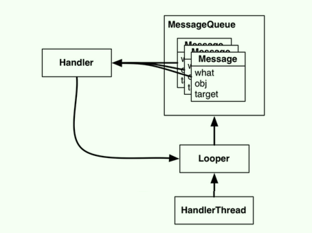
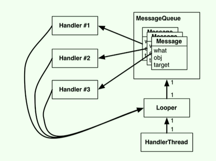

- 第25章 HTTP与后台任务
- 第26章 Looper、Handler和HandlerThread
- 第27章 搜索
- 第28章 后台任务
- 第29章 broadcast intent
- 第30章 网页浏览
- 第31章 定制视图与触摸事件
第25章 HTTP与后台任务
25.2 网络连接基本
url.openConnection()方法默认返回的是URLConnection对象；但要连接的是http URL，因此需将其强制类型转换为HttpURLConnection对象，这样就可以调用getInputStream()、getResponseCode()等方法；URL url = new URL(urlSpec); HttpURLConnection connection = (HttpURLConnection)url.openConnection();try { InputStream in = connection.getInputStream(); if (connection.getResponseCode() != HttpURLConnection.HTTP_OK) { throw new IOException(connection.getResponseMessage() + ": with" + urlSpec); } int byteRead = 0; byte[] buffer = new byte[1024]; ByteArrayOutputStream out = new ByteArrayOutputStream(); while ((byteRead = in.read(buffer)) > 0) { out.write(buffer, 0, byteRead); } out.close(); return out.toByteArray(); } finally { connection.disconnect(); // 关闭网络 }HttpURLConnection对象只有在调用getInputStream()方法（若为POST请求则调用getOutputStream()方法）时，才会真正连接到指定的URL地址；
创建了URL并打开网络连接之后，就可以循环调用read()方法读取网络数据直到取完为止；只要还有数据，InputStream类就会不断地输出字节流数据；
连接网络需要先获取使用网络的权限，需要在AndroidManifest.xml文件中添加权限声明：
<uses-permission android:name="android.permission.INTERNET" />Android M中权限管理得到了加强，有些只要在AndroidManifest.xml中进行声明，有些危险性权限（如获取设备地理位置信息权限），既需要进行声明又需要
运行时动态申请；
25.3 使用AsyncTask在后台线程上运行代码
不应该在主线程中运行网络连接代码，正确的做法是，创建一个后台线程，然后在该线程中运行网络连接代码；
使用后台线程最简便的方式是使用AsyncTask；AsyncTaks创建后台线程后，可以调用
execute()方法启动asyncTask，进而触发后台线程调用doInBackground()方法（需要重写该方法，存放需要执行的后台代码）；
25.4 线程与主线程
网络连接需要时间，Android禁止任何
主线程网络连接行为，否则会抛出NetworkOnMainThreadException异常；线程是一个单一执行序列；单线程中的代码会逐步执行；
主线程和线程不一样，其处于一个无限循环的运行状态，等者用户或系统触发事件；一旦有事件触发，主线程便执行代码做出响应；
- 所有Android应用的运行都是从主线程开始的；
- 由于响应的事件基本都与用户界面相关，主线程有时也叫作UI线程；
- 等待响应期间，用户界面毫无反应，这可能会导致应用无响应（
Application Not Responding，ANR）现象发生；解决此问题需要创建一个后台线程，在该线程中执行耗时的等待响应（比如网络请求）；
25.5 从Flicker获取JSON数据
使用
Uri.Builder可以创建正确转义的参数化URL，其appendQueryParameter(String, String)方法可自动转义查询字符串；String url = Uri.parse("https://api.flickr.com/services/rest/") # 创建一个Uri .buildUpon() # 创建一个Uri.Builder .appendQueryParameter("method", "flickr.photos.getRecent") # 添加参数 .appendQueryParameter("api_key", API_KEY) .build() # 创建一个Uri .toString();json.org API提供了对应JSON数据的Java对象，如JSONObject（JSON对象）和JSONArray（JSON数组），可以通过
getJSONObject(String name)、getJSONArray(String name)这两个便利方法获取；
25.6 从AsyncTask回到主线程
在配置adapter前，需要调用
fragment的isAdd()方法判断该fragment是否与目标activity相关联，进而保证getActivity()方法返回结果不为空；- fragment可以脱离activity而独立存在；
- 之前，所有的方法调用都是由系统框架的回调方法驱动的，所以不会出现问题；
- 现在，由于使用AsyncTask从后台进程触发回调指令，不能确定fragment是否关联着activity，若没有关联则依赖activity的操作（比如调用getContext()方法）就会失败；
在AsyncTask的doInBackground()方法中获取到数据后，不可直接在该方法中进行回调返回数据（不可以从后台线程更新UI）；
AsyncTask还提供
onPostExecute()方法会在doInBackground()方法执行完毕后被调用，该方法在主线程上运行；可以在重写该方法，执行回调返回数据；
25.7 清理AsyncTask
当在fragment中进行网络请求，为了让在设备旋转的时候不会重新创建AsyncTask，可以调用setRetainInstance(true)方法保留fragment；
但是某些情况下需要销毁或重新运行AsyncTask，可以调用
asyncTask.cancel(boolean)方法撤销运行中的task；撤销有两种方式：粗暴的（cancel方法参数为true）、温和的（cancel方法参数为fasle），应避免使用粗暴的方式；在fragment销毁或者视图看不到的时候，应该撤销AsyncTask，否则可能会引发潜在的内存泄露，也可能会出现UI更新问题（UI已失效）；若不管用户怎么操作，要确保重要工作能完成，那最好考虑其他解决方案，比如使用Service；
25.8 深入学习：AsyncTask再探
AsyncTask有三个泛型参数的类型：
- 第一个参数：task.execute()方法的输入参数的类型（参数可以接受一个或多个），该参数会将数据传递给doInBackground()方法；
AsyncTask<String, Void, Void> task = new AsyncTask<String, Void, Void>() { public Void doInBackground(String... params) { for (String parameter : params) { Log.i(TAG, "Received parameter: " + parameter); } return null; } }; task.execute("First parameter", "Second parameter", "Etc.");第二个参数：指定发送进度更新所需要的类型；
- 进度更新通常发生在执行的后台进程中，但是该进程无法更新UI；AsyncTask提供了
publishProgress()、onProgressUpdate()方法； - 在后台线程中，从doInBackground()方法中调用publishProgress()方法，触发onProgressUpdate()方法收到进度更新后被在主线程中调用，在该方法中进行UI更新操作；
final ProgressBar gestationProgressBar; AsyncTask<Void, Integer, Void> haveABaby = new AsyncTask<Void, Integer, Void>() { public Void doInBackground(Void... params) { while (!babyIsBorn()) { Integer weeksPassed = getNumberOfWeeksPassed(); publishProgress(weeksPassed); patientlyWaitForBaby(); } } public void onProgressUpdate(Integer... params) { int progress = params[0]; gestationProgressBar.setProgress(progress); } }; haveABaby.execute();- 进度更新通常发生在执行的后台进程中，但是该进程无法更新UI；AsyncTask提供了
第三个参数：返回结果的数据类型；也就是
doInBackground()方法返回结果的数据类型，以及onPostExecute()方法输入参数的数据类型；
25.9 深入学习：AsyncTask的替代方案
当在fragment中使用AsyncTask加载数据时，若遇到设备配置改变可通过setRetainInstance(true)保存数据；但是若用户在AsyncTask运行时按后退键、或者fragment因内存紧张而被销毁时，AsyncTask无法很好地保存数据，使用Loader是一种可行的解决方法；
Loader可以从某些数据源（磁盘、数据库、ContentProvider、网络、另一个进程等）中加载数据（对象）；
AsyncTaskLoader是个抽象的Loader，其可以使用AsyncTask将数据加载工作转移到其他线程上，可以在不阻塞主线程的前提下获取到数据，并把结果发送给目标对象；我们创建的loader类几乎都是AsyncTaskLoader的子类；
相对于AsyncTask，使用Loader可以通过LoaderManager帮助我们管理loader及其加载的数据、管理loader的生命周期；设备配置变化后，若初始化一个已经加载完数据的loader，其可立即提交数据，而不是再次尝试获取数据，无论fragment是否存在；
第26章 Looper、Handler和HandlerThread
26.1 配置RecyclerView以显示图片
获取res/drawable目录中的图片：
Drawable placeholder = getResources().getDrawable(R.drawable.bill_up_close);
26.2 批量下载缩略图
不可以将所有的图片都下载完成才进行显示（耗时、耗内存），应该在需要显示图片时才去下载，比如在RecyclerView的Adpter的
onBindViewHolder()中进行下载图片；AsyncTask是执行后台线程的最简单方式，但其不适合重复且长时间运行的任务；
26.3 与主线程通讯
Android系统中，消息循环（message loop）由looper与线程构成，looper管理着线程所使用的的消息队列（message queue）；
- looper不断从消息队列中抓取消息，然后完成消息指定的任务；
- 只有线程使用了消息队列（message queue），
可以称该线程是个消息循环(message loop)； - 主线程也是个消息循环，自然也就有looper；主线程的所有工作都是由其looper完成的；
可以创建一个消息循环作为后台线程使用，只需要继承于HandlerThread类即可，比如ThumbnailDownloader；
在fragment的onCreate方法中创建并启动，在onDestroy方法中结束线程（否则其会一直运行下去）；注意，调用start方法后再调用getLooper方法获取looper；
public void onCreate(@Nullable Bundle savedInstanceState) { super.onCreate(savedInstanceState); mThumbnailDownloader = new ThumbnailDownloader<>(); mThumbnailDownloader.start(); mThumbnailDownloader.getLooper(); } public void onDestroy() { super.onDestroy(); mThumbnailDownloader.quit(); }
26.5 Message与message handler
消息队列中存放着消息（message）；消息是一个Message类的实例，其有一些成员变量，比如what（用于描述消息的代码）、obj（附加在消息中的数据）、target（处理该消息的对象，handler）；
message的目标就是handler（Handler类的实例）；创建message时，其会自动与一个handler相关联；
handler不仅仅是处理message的target，也是创建和发布message的接口；
looper拥有消息队列，所以message必须在looper上发布或处理；因此，handler为了与looper协同工作，handler总是引用着looper；
一个looper拥有一个消息队列，一个消息队列中有多个message，每个message都仅有一个handler（多个message的handler可以相同，也可以不同），一个handler与一个looper关联；
- 多个handler关联的looper若相同，则说明handler的message在同一消息队列队列中；
- 多个handler关联的looper若不同，则说明handler的message在不同的消息队列队列中；
 messages_handle  messages_handlers 一般来讲，不应手动手动设置message的handler；
- 创建message时，最好使用
handler.obtainMessage()方法，该方法会自动给该message设置handler为方法调用者自身； - 而且obtainMessage()方法更加高效，其会先从公共循环池中获取，获取不到才创建新的message；
- 创建message时，最好使用
一旦获取到message，可以调用
sendToTarget()方法将其发给handler，然后handler将给message放置到looper的消息队列的尾部；looper取出消息队列中的message后，会将其发送给对应的handler进行处理；message一般在handler的
handlerMessage()方法中进行处理；发送message：
- ConcurrentHashMap是一个线程安全的HashMap；
由于recycleView的viewHolder总是不断在回收重用，因此使用viewHolder为key，图片的url为value，这样就能保证使用匹配viewHolder的最新的url进行下载图片；
public void queueThumbnail(T tagert, String url) { Log.i(TAG, "Got a URL: " + url); if (url == null) { mRequestMap.remove(tagert); } else { mRequestMap.put(tagert, url); // 新增或更新viewHolder对应的url mRequestHandler.obtainMessage(MESSAGE_DOWNLOAD, tagert) .sendToTarget(); // 将下载消息放到后台线程的消息队列中 } }
处理message：
- 在HandlerThread的
onLooperPrepared()方法中，初始化Handler子类并实现处理消息的handleMessage()方法； - onLooperPrepared()方法是创建Handler子类的最好地方，其会在looper首次检查消息队列之前调用；
- 在handleMessage()方法中，需要先检查消息类型再获取obj值，之后完成相关的操作；
由于handler是在后台线程中创建的，所以handler处理message的相关操作是在后台线程完成的；
@Override protected void onLooperPrepared() { mRequestHandler = new Handler() { @Override public void handleMessage(Message msg) { if (msg.what == MESSAGE_DOWNLOAD) { T target = (T) msg.obj; Log.i(TAG, "Got a request for url: " + mRequestMap.get(target)); } } }; }
- 在HandlerThread的
使用ThumbnailDownloader的mRequestHandler，已可以从主线程安排后台线程任务（下载图片）了；反过来，也可以从后台线程使用与主线程关联的Handler，安排主线程任务（显示图片）；
主线程也是一个消息循环；在主线程上创建的Handler会自动与它的Looper相关联；
主线程上创建的Handler也可以传递给另一线程，传递出去的Handler与创建它的线程Looper始终保持着联系；因此，已传出Handler负责处理的所有消息都将在主线程的消息队列中处理；
若message设置了回调方法，不需要再调用sendToTarget()方法，该message也不会被发给handler，而是直接执行回调方法中的Runnable的run()方法；
Runnable myRunnable = new Runnable() { @Override public void run() { } }； Message m = mHandler.obtainMessage(); m.callback = myRunnable;mHandler.post(Runnable)则上面方法的更便利方式（对上面方式进行了封装），不用再显式创建message了，直接运行Runnable的run()方法；mHandler.post(new Runnable() { public void run() { // ..... } });当设备配置改变时，setRetainInstance(true)只是保留fragment对象及其内部的成员变量，fragment对应的视图还是依然被销毁；
图片视图失效可能会导致下载线程被挂起，若点击这些图片视图就会发生异常，此时应该清理下载序列（消息队列中的消息）；
public void clearQueue() { mRequestHandler.removeMessages(MESSAGE_DOWNLOAD); }
26.6 深入学习：AsyncTask与线程
AsyncTask适用于短暂且较少重复的任务，HandlerThread则适合于长久、重复的任务；
从Android 3.2开始，AsyncTask不再为每一个AsyncTask实例单独创建线程，而是使用一个Executor在单一的后台线程上运行所有AsyncTask后台任务，所有的AsyncTask需要排队运行，长时间运行的AsyncTask会阻塞其他AsyncTask；
26.8 深入学习：StrictMode
Android引入的
StrictMode可以帮助开发者探测代码问题，其能探测在主线程上发起网络请求、编码漏洞以及安全漏洞等这样的问题；无需配置，其就会阻止在主线程上发起网络请求这样的代码问题；若需要启用StrictMode默认防御策略，调用
StrictMode.enableDefaults()方法即可；之后，若代码有相关问题，在Logcat中就能看到相关提醒：在主线程上发起网络请求、在主线程上进行磁盘读写、Activity未及时销毁（activity泄露）、SQLite数据库游标未关闭、网络通信使用了明文（未使用SSL/TLS加密）；若想定制应用违反了防御策略的应对行为，可使用
ThreadPolicy.Builder、VmPolicy.Builder类进行定制；定制的应对行为有：控制是否抛出异常，弹出对话框或是日志记录违反策略警示信息；
第27章 搜索
27.2 使用SearchView
可以使用SearchView来实现搜索功能，SearhView是个
操作视图（Action View）；所谓操作视图就是可以内置在工具栏中的视图，SearchVew可以让整个搜索界面完全内置在应用的工具栏中；在应用顶部的工具栏的自定义菜单xml文件添加SearchView；
<?xml version="1.0" encoding="utf-8"?> <menu xmlns:android="http://schemas.android.com/apk/res/android" xmlns:app="http://schemas.android.com/apk/res-auto"> <item android:id="@+id/menu_item_search" android:title="@string/search" app:actionViewClass="android.support.v7.widget.SearchView" app:showAsAction="ifRoom"/> <item android:id="@+id/menu_item_clear" android:title="@string/clear_search" app:showAsAction="never"/> </menu>- app:actionViewClass：指定值为ndroid.support.v7.widget.SearchView表示工具栏要显示SearchView；建议使用支持库版本的SearchView；
- 注意：actionViewClass、showAsAction的命名空间都是app；
在fragment的
onCreateOptionsMenu()方法进行设置SearchView的相关监听操作（不是在onOptionsItemSelected(MenuItem item)方法响应点击事件）；SearchView.OnQueryTextListener接口提供了接收回调的方式，可以响应查询指令，其有两个必须实现的方法：- onQueryTextSubmit (String)：用户提交查询时调用，受理搜索请求则返回true；
- onQueryTextChange(String)：搜索框的文字发生变化时调用；
MenuItem searchItem = menu.findItem(R.id.menu_item_search); SearchView searchView = (SearchView) searchItem.getActionView(); searchView.setOnQueryTextListener(...)
27.3 使用shared preferences实现轻量级数据存储
shared preferences是一个保存在应用沙盒中的xml文件，通常用于存储配置信息、一些不敏感的数据；可使用
SharedPreferences去读写它，其屏蔽了读写文件的实现细节，使用起来类似于Bundle的键值对操作，键为字符串，值为原子数据类型；一般情况下，使用
PreferenceManager.getDefaultSharedPreferences(Context)方法获取的SharedPreferences实例，该方法会返回具有私有权限和默认名称的实例（仅在当前应用内可用）；若需获取SharedPreferences定制实例可使用Context.getSharedPreferences(String, int)方法；SharedPreferences也有事务批量操作的概念，
SharedPreferences.Editor的apply()方法先在内存中执行数据变更，然后在后台线程上真正把数据写入文件；// 读 PreferenceManager.getDefaultSharedPreferences(context) .getString(PREF_SEARCH_QUERY, null);// 写 PreferenceManager.getDefaultSharedPreferences(context) .edit() .putString(PREF_SEARCH_QUERY, query) .apply();
第28章 后台任务
28.0 概述
Service是Android中实现程序后台运行的解决方案，适用于去执行那些不需要和用户交互而且还要求长期运行的任务；Service默认运行在UI线程中，不过可以在Service中创建子线程来完成耗时操作；
不同的服务启动方式，创建的服务的可交互性不同；
a. 不可交互的服务：
- 调用
startService()方法开启服务，调用stopService()、stopSelf()方法停止服务； - 生命周期有onCreate、onStartCommand、onDestroy；
- 首次调用startService()时，创建Service、回调onCreate、onStartCommand，再次调用startService()时，只执行onStartCommand；
- 创建方式：继承Service，重写onBind()方法返回nil；
- 调用
b. 可交互的服务：
- 调用
bindService()方法开启服务，返回后台服务的代理对象，通过代理对象调用后台服务中定义的方法，也就实现了后台服务和前台的交互；调用unbindService()停止服务； - 生命周期有onCreate、onBind、onUnBind、onDestroy；
- 首次调用bindService()时，创建Service、回调onCreate、onBind，再次调用bindService()时，只执行onBind；
- 创建方式：继承Service，重写onBind()方法返回一个自定义IBinder对象；
- 调用
c. 混合性交互的服务：
- startService、bindService没有本质区别；
- 同时使用startService、bindService启动服务，当服务创建后就不再创建回调onCreate方法了，关闭时需要使用两种方式关闭，否则服务无法关闭；
默认情况下，不论是使用startService，还是使用bindService创建的服务，都称为
本地服务（Local），该服务附在启动它的程序的主进程上；- a. 没有独立的线程在一定程度上节约了资源，在同一进程因此不需要IPC，也不需要AIDL；
- b. 该服务只为本程序工作；
- c. 服务的最大生命周期：
- 使用startService创建的：当调用startService方法的组件（如activity）被销毁时，该服务也会被销毁；
- 使用bindService创建的：只有该应用进程被销毁时，该服务才会被销毁；
远程服务（Remote）
- 该服务为独立的进程；在应用进程被Kill的时候，该服务依然在运行，不受其他进程影响，为多个进程提供服务具有较高的灵活性；
- 远程服务在AndroidManifest.xml中声明Service时，需要指定
android:process属性；创建、关闭远程服务和创建本地服务没有区别，都是使用startService、bindService方法等； - 独立进程的名称为所在包名加上android:process属性值；
- 一般情况下很少使用，多进程间数据通信比较复杂；但是一些应用为了实现
杀不死的后台，会同时创建多个远程服务用于互相唤醒；
前台服务
- 一般情况下服务都是运行在后台，所以称为
后台服务；后台服务（本地服务）的优先级相对比较低，当系统内存不足时，其可能会被回收掉； - 使用
前台服务可以解决上面的问题，其可以一直保持运行状态而不被系统回收，比如状态栏中的天气预报； - 创建前台服务很简单，就是在service的基础上创建一个Notification，然后使用service的
startForeground()方法即可启动为前台服务；
- 一般情况下服务都是运行在后台，所以称为
IntentService
- IntentService是为了简便Service的使用；其会自动创建子线程运行需要执行的代码，并且在代码运行完毕后自动关闭service；
- 使用IntentService只要继承IntentService并覆写onHandlerIntent()方法，在该方法中执行耗时操作就可以了；
28.1 创建IntentService
若不给应用提供用户界面，只想任务在后台运行，就需要使用
服务；IntentService是Android提供的最常用的一种类型服务，其也是一个context（Service是Context的子类），并能够响应intent；
服务的intent也被称为
命令（command），命令就是要服务完成某项具体的任务；服务的种类不同，其执行命令的方式也不尽相同；IntentService的工作流程：
- 1). 接收到首个命令后，IntentService启动并触发一个后台线程，然后将命令放入队列，之后新进命令放在队列尾部；
- 2). 随后，IntentService按照顺序执行队列中的每一条命令（在后台线程上调用onHandleIntent(Intent)方法）；
- 3). 最后，执行完队列中的全部命令后，服务也随即停止并销毁；
28.2 服务的作用
Activity是Android应用的前台，Service就是Android应用的后台；即使前台关闭，activity消失很久，也可以让后台服务依然持续不断地工作；
Android为用户提供了关闭后台应用进行网络连接的功能，所以在后台连接网络时，需要使用
ConnectivityManager确认网络连接是否可用；- 使用后台数据设置选项关闭后台数据下载后，则后台服务也就无法联网了（即使网络是畅通的），
connectivityManager.getActiveNetworkInfo()返回null； - 使用
connectivityManager.getActiveNetworkInfo().isConnected()可检查当前网络是否已连接； - 注意，获取网络状态需要在manifest中配置
ACCESS_NETWORK_STATE权限；
- 使用后台数据设置选项关闭后台数据下载后，则后台服务也就无法联网了（即使网络是畅通的），
28.4 使用AlarmManager延迟运行服务
在没有activity运行的情况下，为在后台运行服务，需要一个办法启动它；比如说，可以设置一个5分钟间隔的定时器；
- 1). 一种方式是调用Handler的sendMessageDelayed()、postDelayed()方法；但当用户离开当前应用，进程就会停止Handler消息也会随之消亡，该方式不可靠；
- 2). 另一种方式是使用
AlarmManager；AlarmManager是一个可以发送Intent的系统服务，其发送使用PendingIntent包装的intent；
调用
PendingIntent.getService()方法创建一个用来启动XXService的PendingIntent，参数依次为：- a. 用于发送intent的context；
- b. 区分pendingIntent来源的请求代码；
- c. 待发送的intent对象；
- d. 决定如何创建pendingIntent的标志位；
Intent intent = PollService.newIntent(context); PendingIntent pi = PendingIntent.getService(context, 0, intent, 0);设置定时器可以调用
alarmManager.setRepeating()方法，参数依次为：时间基准常量、启动的时间、循环的时间间隔、要发送的pendingIntent；从Android5.1开始最小时间间隔为60秒；- 时间基准常量AlarmManager.ELAPSED_REALTIME表示经过一段时间就启动定时器；时间基准常量AlarmManager.RTC表示到某个固定时间就启动定时器；
// 通过LogCat可看到PollService服务以60秒为间隔运行（这正是AlarmManager擅长的事情）， // 即使进程停止了，AlarmManager依然会不断发送intent，反复启动PollService服务； AlarmManager alarmManager = (AlarmManager) context.getSystemService(Context.ALARM_SERVICE); alarmManager.setInexactRepeating(AlarmManager.ELAPSED_REALTIME, SystemClock.elapsedRealtime(), POLL_INTERVAL_MS, pi);取消定时器可调用
AlarmManager.cancel(pendingIntent)方法，通常也需同步取消pendingIntent；alarmManager.cancel(pendingIntent); pendingIntent.cancel();合理控制服务启动的频度
- 后台服务重复性的工作是个开销极大的操作，若该服务没有精确时间间隔要求的，可以将我们的应用和其他应用的定时器放在一起管理，让系统可以批量处理定时器；
- alarmManager.setRepeating()就是以不精确的时间间隔设置定时器（定时器可重复）；
- alarmManager.setWindow()、alarmManager.setExact()则是以精确的时间间隔设置定时器（定时器只能执行一次，若需要重复需要手动处理）；
时间基准值：
- 1). AlarmManager.ELAPSED_REALTIME：最近一次开机后运行的时间；
- 2). AlarmManager.RTC：使用UTC时间；需要考虑本地时间因素；
- 3). AlarmManager.ELAPSED_REALTIME_WAKEUP、AlarmManager.RTC_WAKEUP：若设置处于睡眠状态即屏幕关掉状态，上面的时间基准是不会触发的；使用这两个值可以让定时器强制唤醒设备；
调用
PendingIntent.getService()方法传入PendingIntent.FLAG_NO_CREATE标志，表示若pendingIntent不存在，则直接返回null而不是创建；- 一个pendingIntent只能登记一个定时器，因此在这里，pendingIntent为空值表示还未设置定时器；
- pendingIntent是一个token对象，其代表当前应用发送token对象；若使用同一个intent多次请求pendingIntent，得到的是同一个pendingIntent；
PendingIntent pi = PendingIntent .getService(context, 0, intent, PendingIntent.FLAG_NO_CREATE); boolean isOn = (pi != null);
28.6 通知信息
通知消息（notification）是指显示在通知抽屉上的消息条码，用户可向下滑动屏幕读取；若要发送通知消息，需要要创建Notification对象，之后调用NotificationManager系统服务的notify()方法发送；完整的Notification至少包括：
- a. ticker text：Lollipop之前的设备，首次显示通知时显示在状态栏上的文字；Lollipop之后的设备，不显示但仍与可访问性服务相关；
- b. 图标：显示在状态栏上；Lollipop之前的设备，在ticker text消失后出现；
- c. 通知信息本身：在通知抽屉中显示的视图；
- d. 待触发的PendingIntent：用户点击抽屉中的通知信息时触发；
Resources resources = getResources(); Intent intent = PhotoGalleryActivity.newIntent(this); PendingIntent pi = PendingIntent.getActivity(this, 0, intent, 0); Notification notification = new NotificationCompat.Builder(this) .setTicker(resources.getString(R.string.new_pictures_title)) .setSmallIcon(android.R.drawable.ic_menu_report_image) .setContentTitle(resources.getString(R.string.new_pictures_title)) .setContentText(resources.getString(R.string.new_pictures_text)) .setContentIntent(pi) .setAutoCancel(true) .build(); NotificationManagerCompat notificationManager = NotificationManagerCompat.from(this); notificationManager.notify(0, notification);- 以android.R.drawable.DRAWABLE_NAME包名形式引用的图标资源已内置于Android.framework中；
- setAutoCancel(true)表示点击消息后，该消息从消息抽屉中删除；
- 发送消息方法notificationManager.notify(0, notification)的第一个参数为通知消息的标识符，整个应用中该值应该是唯一的；若使用同一ID发送两条消息，则第二条消息会替换掉第一条消息，在实际开发中，这也是进度条或其他动态视觉效果的实现方式；
28.8 深入学习：服务之细节
对于大多数服务任务，推荐使用IntentService；但IntentService模式不适合所有架构，若不适合需要直接继承Service；
与Activity一样，Service也是一个有生命周期回调方法的应用组件，这些回调方法同样也是在UI线程上运行，不能在后台线程上运行；
为了简化代码，IntentService内部提供了一套Service标准代码，而且其也提供了一套标准的在后台线程上运行的支持方案；推荐直接使用IntentService；
服务的生命周期：
- onCreate()：服务创建时被调用；
- onStartCommand(Intent, int, int)：每次通过startService(Intent)方式启动服务时调用；两个int参数分别为：标识符集（表示该intent是重新发送，还是一次之前没有成功的发送）、启动ID（每次都不同，可以用于区分不同的命令）；
- onDestroy()：服务停止时被调用；
服务停止的方式取决于服务的类型；服务的类型由onStartCommand()方法的返回值确定，有Service.START_NOT_STICKY、START_REDELIVER_INTENT、START_STICKY；
non-sticky服务：
- 该类型的服务会在自己认为服务已完成时停止；为得到该类型的服务，onStartCommand方法返回Service.START_NOT_STICKY（服务消亡后就永久消亡）、START_REDELIVER_INTENT（服务消亡后，在资源不紧张时会再次重启）；
- 调用stopSelf()（无条件地停止服务）、stopSelf(int)（需要传入启动ID才停止服务）方法告诉Android任务已完成；
- IntentService是一种non-sticky服务，且onStartCommand方法默认返回START_NOT_STICKY；若需返回START_REDELIVER_INTENT，可调用intentService.setIntentRedelivery(true)方法；
sticky服务：
- 该类型的服务会持续运行，直到外部部件调用Context.stopService(Intent)方法让其停止；为得到该类型的服务，onStartCommand方法返回Service.STICKY；
- 可以传入一个null intent给onStartCommand方法，以实现该类型服务的重启；
- 该类型的服务适用于长时间运行的服务，比如音乐播放器；
- 该类型的服务管理很不方便，很难判断服务是否已启动；
可以使用
bindService(Intent, ServiceConnection, int)方法绑定一个服务，以此获取直接调用被绑定服务中的方法的能力；ServiceConnection是代表服务绑定的一 个对象，负责接收全部绑定回调方法@override public void onCreate(Bundle savedInstanceState) { super.onCreate(savedInstanceState); Intent i = new Intent(getActivity(), MyService.class); getActivity().bindService(i, mServiceConnection, 0); } @override public void onDestroy() { super.onDestroy(); getActivity().unbindService(mServiceConnection); }服务还有两个与绑定有关的生命周期回调方法：
- onBind(Intent)：每次绑定服务时被调用，返回值为ServiceConnection.onServiceConnected(ComponentName, IBinder)方法返回的IBinder对象；
- onUnbind(Intent)：服务绑定终止时调用；
绑定服务分为本地服务绑定、远程服务绑定（它们赋予了其他进程中应用调用服务方法的能力）；
28.9 深入学习：JobScheduler和JobService
通过AlarmManager、IntentService和PendingIntent相互配合，已经创建了周期性的后台服务；
从Lollipop（API21）开始，为了更好地实现后台服务，Android引入了一个叫做JobScheduler的全新API；除了实现常规后台服务之外，JobScheduler还支持按场景、按条件运行后台服务；虽然上述某些场景使用AlarmManager、IntentService也可能实现，但是比较麻烦；
使用JobScheduler需要新建一个处理任务的服务，使用JobService子类，重写onStartJob(JobParameters)、onStopJob(JobParameters)方法；
- onStartJob：服务启动后在主线程上回调，返回值为布尔值，true表示任务还未完成、false表示任务已完成；
- onStopJob：服务结束前在主线程上回调，返回值为布尔值，true表示任务计划下次继续、false表示任务永久结束；
与IntentService不同，JobService需要单独开后台线程执行任务（比如在onStartJob方法中创建AsyncTask）；
任务结束，可以调用
jobFinished(JobParameters, boolean)方法通知结果；第二个参数若为true，表示任务其实还没有做完，下次继续；在manifest中配置文件中登记服务时，必须将其导出并添加权限；导出就是将服务暴露出来，添加的权限控制只有JobScheduler才能运行；
<service android:name=".PollService" android:permission="android.permission.BIND_JOB_SERVICE" android:exported="true"/>创建一个JobInfo就是创建JobService；setPersisted(true)方法保证服务在设备重启后也能按计划运行；
final int JOB_ID = 1; JobScheduler scheduler = (JobScheduler) context.getSystemService(Context.JOB_SCHEDULER_SERVICE); JobInfo jobInfo = new JobInfo.Builder(JOB_ID, new ComponentName(context, PollService.class)) .setRequiredNetworkType(JobInfo.NETWORK_TYPE_UNMETERED) .setPeriodic(1000 * 60 * 15) .setPersisted(true) .build(); scheduler.schedule(jobInfo);一旦创建了JobService，启动它就非常迅速，可以使用JobScheduler检查是否已计划好了任务；
final int JOB_ID = 1; JobScheduler scheduler = (JobScheduler) context.getSystemService(Context.JOB_SCHEDULER_SERVICE); boolean hasBeenScheduled = false; for (JobInfo jobInfo : scheduler.getAllPendingJobs()) { if (jobInfo.getId() == JOB_ID) { hasBeenScheduled = true; } }JobScheduler和未来的后台服务
- 只有Lollipop及其之后的系统才支持JobScheduler，并且其也没有支持库版实现；
- AlarmManager实现的定时服务是唯一支持各个Android系统版本的可行标准库解决方案；
- 但是AlarmManager并不是处理后台定时器服务的最好方式，一旦JobScheduler普及，Android就会立即抛弃AlarmManager；
- 也可以使用android-job是第三方兼容库Evernote；
28.11 深入学习：sync adapter
也可以使用
sync adapter创建常规的polling网络服务，和JobScheduler一样可以代替AlermManager；sync adapter主要用于从某个数据源同步数据（上传、下载、既上传又下载）；设备重启后也自动完成相关同步，而且还能和操作系统完美整合；
第29章 broadcast intent
29.1 普通intent和broadcast intent
broadcast intent的工作原理类似于之前的intent，唯一不同的是broadcast intent可同时被多个叫做broadcast receiver的组件接收；若使用公共API，activity和Service都可以响应隐式intent；若使用私有API，显式intent就足够了；如此还需要
broadcast intent的理由只有一个，其可以发送给多个接收者；虽然broadcast receiver也可以响应显式intent，但是几乎不这样使用（显式intent只允许有一个接收者）；
29.2 接收系统broadcast：重启后唤醒
通过监听带有
BOOT_COMPLETED操作的broadcast intent可以获知设备是否已完成启动；若要监听则需要创建并登记一个broadcast receiver；
- 创建一个继承于android.content.BroadcastReceiver的子类，重写onReceive()方法；一旦收到intent，broadcast receiver的
onReceive(Context, Intent)方法被调用，执行完毕后receiver被销毁； - 并且在manifest文件中配置该receiver标签，其中包含相应的intent-filter以匹配相应的broadcast intent；
- 最后需添加相应的use-permission标签；
<receiver android:name=".StartupReceiver"> <intent-filter> <action android:name="android.intent.action.BOOT_COMPLETED"/> </intent-filter> </receiver><uses-permission android:name="android.permission.RECEIVE_BOOT_COMPLETED" />- 创建一个继承于android.content.BroadcastReceiver的子类，重写onReceive()方法；一旦收到intent，broadcast receiver的
Android Device Monitor在KitKat之前被称为DDMS（Dalvik Debug Monitor Server）；
- 在KitKat之前，Dalvik是Android上的运行时系统，自KitKat开始，Google又引入了ART（Android Runtime），到Lollipop时就只剩下ART可用；
broadcast receiver生命周期非常短暂，一旦onReceive(Context, Intent)方法在主线程上执行完，receiver就不存在了；其不适合做一些费时任务，但是可以做一些便利任务，比如启动activity或service（不需要等待返回结果的）、系统重启后重置定时运行的定时器；
29.3 过滤前台通知消息
发送broadcast intent：
- 发送自己定制的broadcast intent（比如发送broadcast通知目标部件有新的搜索结果消息了），只需要创建一个intent（intent构造使用自定义操作常量字符串），之后传入
sendBroadcast(Intent)方法即可；
- 发送自己定制的broadcast intent（比如发送broadcast通知目标部件有新的搜索结果消息了），只需要创建一个intent（intent构造使用自定义操作常量字符串），之后传入
接收处理broadcast intent：
接收自定义的broadcast intent和接收系统的broadcast intent一样，都可以新建BroadcastReceiver子类，之后在manifest中进行登记；
但是在manifest配置文件中声明的receiver会不分状态地接收intent（即不断地接收，无法根据相关对象是否存在而接收），动态broadcast receiver可以解决此问题；
动态broadcast receiver是在代码中，而不是在配置文件中进行登记声明；调用
registerReceiver(BroadcastReceiver, IntentFilter)方法进行登记声明，调用unregisterReceiver(BroadcastReceiver)方法取消登记声明；在registerReceiver()和unregisterReceiver()方法中的receiver要使用同一个实例变量；通常Receiver类型被声明成一个内部类实例；
任何使用XML定义的IntentFilter都可以以代码的方式定义，可以直接调用addCategory(String)、addAction(String)、addDataPath (String)等方法；
IntentFilter filter = new IntentFilter(PollService.ACTION_SHOW_NOTIFICATION); getActivity().registerReceiver(mOnShowNotification, filter);动态登记的broadcast receiver要事后清理；通常在相对应的生命周期方法中进行登记、清理，比如onStart和onStop；
getActivity().unregisterReceiver(mOnShowNotification);若在onCreate、onDestroy进行登记、清理，若此时使用保留fragment，设备旋转后，onCreate、onDestroy中的getActivity()的返回值不同，需要使用getActivity().getApplicationContext()方法；
使用私有权限限制broadcast
- 使用自定义broadcast intent默认存在一个问题，即系统中的任何应用均可
监听broadcast intent、触发broadcast receiver； 有多种方式可以阻止未授权应用：
- a. 在manifest配置文件中给receiver标签添加一个
android:exported="false"属性，声明其仅供应用内部使用，这样系统中的其他应用就再也无法接触到该receiver； b. 创建自己的使用权限（在manifest文件中使用
permission标签创建），之后声明获取相应的使用权限（使用uses-permission标签）；即使是自定义的权限，也必须在使用这个权限前获取它；<permission android:name="com.bignerdranch.android.photogallery.PRIVATE" android:protectionLevel="signature" /><uses-permission android:name="com.bignerdranch.android.photogallery.PRIVATE" />- 之后，在sendBroadcast()时需要添该权限字符串参数，所有的应用都必须有该权限才能接收你发送的intent；
注意上面只解决了让其他应用不可以随意接收的问题，还有一个问题就是，其他应用可通过创建自己的broadcast intent来触发你的broadcast receiver；这个问题可以通过在registerReceiver()方法中传入自定义权限解决；
getActivity().registerReceiver( mOnShowNotification, filter, PollService.PERM_PRIVATE, null);
- a. 在manifest配置文件中给receiver标签添加一个
- 使用自定义broadcast intent默认存在一个问题，即系统中的任何应用均可
自定义权限必须指定
android:protectionLevel属性值，Android根据该值确定自定义权限的使用方式；属性值有- normal：用于阻止执行危险操作，如访问个人隐私数据等；不需要用户明确授权；
- dangerous：用于执行危险操作；需要用户明确授权；
- signature：使用和声明应用一致的证书则进行同意授权；授权由系统完成；
- signatureOrSystem：类似于signature，一般用不到；
普通broadcast intent可以同时被多个receiver接收，各个receiver执行顺序不确定；可以使用有序broadcast intent让多个broadcast receiver按照优先级依次处理broadcast intent；调用context的
sendOrderedBroadcast(Intent, String, BroadcastReceiver, Handler, int, String, Bundle)方法发送有序广播；- 参数依次为intent、权限、result receiver、支持result receiver的handler、结果代码初始值、结果数据、结果附加内容；
- result receiver：在所有有序broadcast intent接收者结束运行后才开始执行；
当broadcast receiver接收到广播后
- a. 可以使用
setResult()将结果数据传给下一个broadcast receiver接收，然后通过getResult()取得上个broadcast receiver返回的结果数据； - b. 也可以用
abortBroadcast()来让系统拦截该广播并将其丢弃，使该广播不再传送给别的broadcast receiver；
- a. 可以使用
设置结果数据，可以调用setResultCode(int)、setResultData(String)、setResultExtras(Bundle)、setResult(int, String, Bundle)等方法；
broadcast receiver设置优先级，数值越大越先接收到broadcast intent；用户可以定义的最低优先级为-999，-1000及以下值为系统保留值；
<receiver android:name=".NotificationReceiver" android:exported="false"> <intent-filter android:priority="-999"> <action android:name="com.example.scott.photogallery.SHOW_NOTIFICATION"/> </intent-filter> </receiver>若广播中被优先级高的broadcast receiver接收到后被拦截，则之后的优先级低的broadcast receiver就不能接收到；若还需要一个不管有没有被拦截都能接收的broadcast receiver，则在调用sendOrderedBroadcast()方法时设置result receiver；
29.4 receiver与长时运行任务
- 若不想受限于主线程的时间限制，让broadcast intent触发一个长时间运行任务，有两种方法可以选择：
- a. 将任务交给服务去处理，通过broadcast receiver启动服务（推荐方式）；服务可以运行很久，直到完成需要处理的任务；
- b. 使用BroadcastReceiver.goAsync()方法；
- 该方法返回一个BroadcastReceiver.PendingResult对象，随后可使用该对象提供结果；
- 因此可以将PendingResult交给AsyncTask去执行长时间运行的任务，然后调用PendingResult的方法响应broadcast；
- 该方式不灵活，仍需要快速响应broadcast（10秒内）；优势是可以调用方法设置有序broadcast的结果；
29.5 深入学习：本地事件
broadcast intent可以实现系统内全局的消息传递，若仅需要应用内的消息事件广播，可以使用事件总线（event bus）；
事件总线的设计思路就是提供一个应用内的部件可以订阅的共享总线或数据流；事件一旦发布到总线上，各订阅部件就会被激活并执行相应的回调代码；
EventBus就是一个第三方事件总线库，类似的还有Otto；也可以使用RxJava Subject和Observable来模拟事件总线；
为了实现在应用内发送broadcast intent，Android本身也提供了
LocalBroadcastManager的广播管理类，但使用上第三方库更方便；
29.6 深入学习：探测fragment的状态
我们使用了全局性的broadcast机制实现PhotoGallery应用的broadcast通知功能；broadcast虽然是全局的，但利用定制权限实现限定broadcast intent只能在应用内接收；
不用本地broadcast机制，就是因为LocalBroadcastManager无法处理PhotoGallery应用中的这种broadcast通知；LocalBroadcastManager不支持有序broadcast，且不支持在独立线程上发送和接收broadcast；
第30章 网页浏览
30.3 较难方式：使用WebView
打开网页有两种方式，一种是打开独立的浏览器（使用隐式intent），一种是使用WebView；
Intent intent = new Intent(Intent.ACTION_VIEW, url); startActivity(intent);WebView显示网页需要做三件事：
- 1). 告诉WebView要打开的URL；
- 2). 启动JavaScript；默认是禁用的，不是必须启用；启用后，Android Lint会提示警告担心有跨域攻击，可使用@SuppressLint("SetJavaScriptEnabled")注解关闭警告；
- 3). 设置WebViewClient；（老版本系统，需要重写其shouldOverrideUrlLoading(WebView, String)方法并返回false）
mWebView.getSettings().setJavaScriptEnabled(true); mWebView.setWebViewClient(new WebViewClient()); mWebView.loadUrl(mUri.toString());加载URL必须等webView配置完成后进行；可以调用
getSettings()方法获取WebSetting实例，webSetting是修改WebView配置的三种途径之一；WebViewClient是一个事件接口，实现该接口可以响应各种渲染事件；比如可检测渲染器何时开始从指定URL加载图片等；该接口有多个方法可被实现，其中
shouldOverrideUrlLoading(WebView, String)方法（已废弃）决定当有新的URL加载到WebView时（如点击某个链接）是否需要自己处理，true为自己处理，false为系统默认处理（会发送附有URL数据的隐式intent）；WebChromeClient也是一个事件接口，用来响应那些改变浏览器中装饰元素的事件；比如JavaScript警告信息、网页图标、状态条加载，以及当前网页标题的刷新；进度条、标题栏更新都有各自的回调方法，即
onProgressChanged(WebView, int)（从0到100的数值）、onReceivedTitle(WebView, String)方法；
30.4 处理WebView的设备旋转问题
旋转设备屏幕，WebView重新加载了网页数据，这是因为WebView包含太多的数据，无法在onSaveInstanceState()方法内全部保存；也无法使用保留Fragment，WebView是视图层级的；
对于一些类似的类（如VideoView），Android推荐让activity自身处理设备配置变更；也就是，无需销毁重建activity，就能直接调整自己的视图以适应新的屏幕尺寸；需要在AndroidManifest.xml配置文件中做如下配置：
<activity android:name=".PhotoPageActivity" android:configChanges="keyboardHidden|orientation|screenSize" />- 上面的
android:configChanges属性值，表示若因键盘开或关、屏幕方向改变、屏幕大小改变而发生设备配置更改，则activity自身处理配置更改；
- 上面的
activity自身处理配置变更也是有风险的，资源修饰符无法自动工作，需要手工重载视图；
即使activity自身处理设备配置更改，onSavedInstanceState()方法存储UI状态依然是必需的，要考虑低内存情况；
30.7 挑战练习：使用后退键浏览历史网页
- 首先覆盖后退键方法
Activity.onBackPressed()；在该方法内，再使用WebView的历史记录浏览方法WebView.canGoBack()、WebView.goBack()实现想要的浏览逻辑；
30.8 挑战练习：非HTTP链接支持
- WebViewClient总是让WebView尝试自己加载URI，即使是其不支持的URI scheme；
第31章 定制视图与触摸事件
31.2 创建定制视图
定制视图分为两大类别：
- 简单视图：不包括子视图，几乎总是用来处理定制绘制；其内部也可以很复杂；
- 聚合视图：由其他视图对象组成，通常用来管理子视图，但不负责处理定制绘制，图形绘制任务都委托给了各个子视图；
创建定制视图步骤：
- 1). 选择超类；简单定制视图，使用View空白画布作为超类最常见；聚合定制视图，选择合适的超类布局，比如FrameLayout；
- 2). 继承选定的超类，覆盖超类的构造方法；
- 3). 覆盖其他关键方法，以定制视图行为；